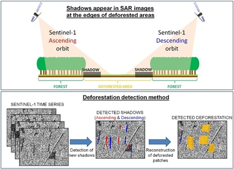
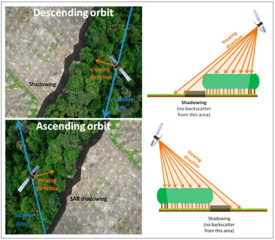

.png)
Table of contents |
|---|
Satellites provide a greater efficiency and affordability in collecting data as opposed to using a fleet of drones or using aeroplanes. Which is why sattellites are commonly used when measuring data over lkarge spatial areas.
Ever since the first satellite has been launched into space in 1957 (Nasa, No date), satelites have been integrated into our lives from helping us forecast our weather to monitoring deforestation (EVONA, 2023) .Satellites allow us to measure the earths features at a completely different angle, instead of from the surface of the earth or by planes in the sky. This advantage allows measurements to be taken from remote areas where it can be difficult to collect data, such as the pacific ocean, or the Sahara desert(geoimage, 2023). We can use this data to measure features of the earth such as land height or rates of deforestation.
Remote sensing is a way of recording something without physically touching it from a distance (GISGeography,2023).
Satellites orbiting the earth are also equipped with remote sensing equipment, which have two fundamental techniques
of collecting data; Active and Passive remote sensing.
Active remote sensing works by illuminating a target by sending a pulse of light or radiation, and measuring the
backscatter reflected to the sensor as shown in figure 1 and figure 2. Whereas passive remote sensing is where the receiver
measures natural radiation such as light, Infrared or radiation emitted of objects, as seen on figure 1 (GISGeography,2023).
Take a camera for example; cameras capture light reflected of an object then uses this to create an image, this illustrates
the concept of passive remote sensing (GISGeography,2023).
<-Figure 1: Passive and active remote sensing(Hameed, 2022)
<-Figure 2: Active Remote sensing (Jet Propultion Laboratory, 2020)
An advantage of passive remote sensing would be that it is able to create coloured images, and they have a high spatial resolution. This allows high resolution images to be created which are useful for applications such as tracking deforestation (SPATIALPOST,2023). Disadvantages would include that passive sensors require the target to be emitting pr reflecting radiation or light, if the target isn’t doing so, this would make the target invisible to the sensor (GISGeography,2023). Passive sensors cannot penetrate clouds or smoke to detect the target (SPATIALPOST,2023), leading to passive sensors becoming useless in areas with clouds. On the other hand, Active sensing can penetrate through clouds and thicker mediums such as the ocean to detect the target, as used by SONAR (Sound Navigation and Ranging) for underwater applications such as detecting submarines or fish (SPATIALPOST,2023). Active sensing can operate regardless of daylight, allowing data to be collected day and night (SPATIALPOST,2023).
The fundamental principle of any radar imaging technique is to send electromagnetic waves towards a surface and record the amount of signal that backscatters
back, and its time delay (NISAR, no date).
SAR refers to a technique used for producing images by bouncing microwaves of an object (ASF,2023) from an airborne airplane,
unmanned aircraft or spacecraft (NISAR, no date). SAR uses active remote sensing which allows data to be collected on a 24-hour
basis, and for data to be recorded in all kinds of weather (Tsokas et all, 2022).
Figure 3 illustrates the usage of images created via SAR to find areas of deforestation by detecting shadows
left by trees (Bouvet et al,2018). As the satellite approaches a border moving from west to east between a forested area and
a non-forested area, a shadow appears at that border. As the satellite continues moving towards the other side of the deforested patch, from east to west,
shadows can be formed at the border between them, two opposing lines of shadows can be used to estimate the area of the deforested patch as shown in
Figure 4 (Bouvet et al,2018).
 Figure 3: Deforestation Detection method using shadows seen by SAR images (Bouvet et al,2018)
 Figure 4: Satellite viewing a deforested patch from two different angles (Bouvet et al,2018)
Interpreting backscattered radiation to charecterise the surface of the earth
When a satellite with active remote sensing technology emits a pulse of radiation towards a target the radiation reflected back is known as backscattered radiation as shown in figure 5,
<- Figure 5: Backscattered Radiation (GISER,2022)
there can be three main types of measurements of backscattered radiation (GISGeography,2023):
• Specular reflection
• Diffuse scattering
• Double Bounce
Specular reflection can be detected in areas of darkness in the image shown in Figure 6. In this case the radiation has reflected on a smooth surface, such as rivers or paved surfaces, leading too little to no radiation being sent back to the sensor as the radiation is reflected a completely different direction relative to the sensor as shown on Figure 7 (GISGeography,2023). Diffuse scattering is where the radiation hits a ridged surface causing the radiation to spread out randomly leading to random variations of radiation being sent back to the sensor as seen on Figure 7. These random variations could indicate areas with dense vegetation as shown on Figure 6 (GISGeography,2023). A bright spot indicates a double bounce backscatter as shown in Figure 8 which is the condition where the most amount of radiation is reflected directly back to the sensor; this characteristic is usually found when measuring urban areas with lots of buildings as seen on Figure 6.
<- Figure 6: Double Bounce, Specular Reflection, Diffuse Scatter (GISGeography,2023)
<- Figure 7: Specular and Diffuse reflection (Micheal W.Davidson, 2015)
<-Figure 8: Double Bounce Scattering (Blasco et al,2020)
Conclusion
Active and passive remote sensing are one of the most important methods in measuring the surface of the Earth. Active sensors are preferred where data needs to be collected constantly, as they can collect data on a 24-hour basis regardless of daylight. However, when images with a greater spatial resolution, as opposed to those generated via Active remote sensing, is needed passive remote sensing would be a more favourable option (SPATIALPOST,2023).
References
ASF (2023). SAR: The Power Tool of Remote Sensing. Available at: What is SAR? | Alaska Satellite Facility (Accessed: 27/11/2023).Blasco et al,(2020) Effects on The Double Bounce Detection in Urban Areas Based on SAR Polarimetric Characteristics. Available at: Remote Sensing
| Free Full-Text | Effects on the Double Bounce Detection in Urban Areas Based on SAR Polarimetric Characteristics (mdpi.com) (Accessed: 25/11/23)Bouvet et al (2018). Use of SAR Shadowing Effect for Deforestation Detection with Sentinel-1 Time Series. Available at: Remote Sensing
| Free Full-Text | Use of the SAR Shadowing Effect for Deforestation Detection with Sentinel-1 Time Series (mdpi.com) (Accessed: 27/11/2023)EVONA (2023). THE UNSEEN IMPACT
OF SATELLITES ON OUR DAILY LIVES. Available at:The Unseen Impact of Satellites on Our Daily Lives | EVONA (Accessed 28/11/2023)Geoimage (2023) The advantages of satellite imagery compared to other alternatives.
Available at: The advantages of satellite imagery compared to other alternatives | Geoimage (Accessed: 31/10/23)GISER (2022). What is Remote Sensing? The Definitive Guide. Available at: What is Remote Sensing? The Definitive Guide - GIS开发者
(giserdqy.com) (Accessed: 22/11/2023)GISGeography (2023) What is Remote sensing? The Definitive Guide (Accessed at 15/11/23).>Hameed, A.N.A.H (2022). Passive and Active Remote Sensing System.
Available at: 4): Passive and Active Remote Sensing System,[16]. | Download Scientific Diagram (researchgate.net)( Accessed: 27/11/2023)Jet Propulsion Laboratory (2020). U.S.-European Sentinel-6 Sea
Level Satellite Gears Up for Launch. Available: https://scitechdaily.com/u-s-european-sentinel-6-sea-level-satellite-gears-up-for-launch/ (Accessed: 03/12/2023)Michael W.Davidson,(2015) Reflection of light. Available at: Molecular Expressions: Science,
Optics, and You: Light and Color - Reflection of Light (fsu.edu) (Accessed: 22/11/2023)NASA (No date). Sputnik and the Dawn of the Space Age. Available at: NASA | History - Sputnik (Accessed: 26/11/2023).NISAR (No date). NASA – ISRO SAR MISSION. Available at: Overview | Get to Know SAR – NASA-ISRO SAR Mission (NISAR) (Accessed: 25/11/2023)SPATIALPOST (2023). Active vs Passive Sensors: Choosing the Right One for Remote Sensing. Available at: Active vs Passive Sensors:
Choosing the Right One for Remote Sensing | Spatial Post (Accessed 22/11/2023)